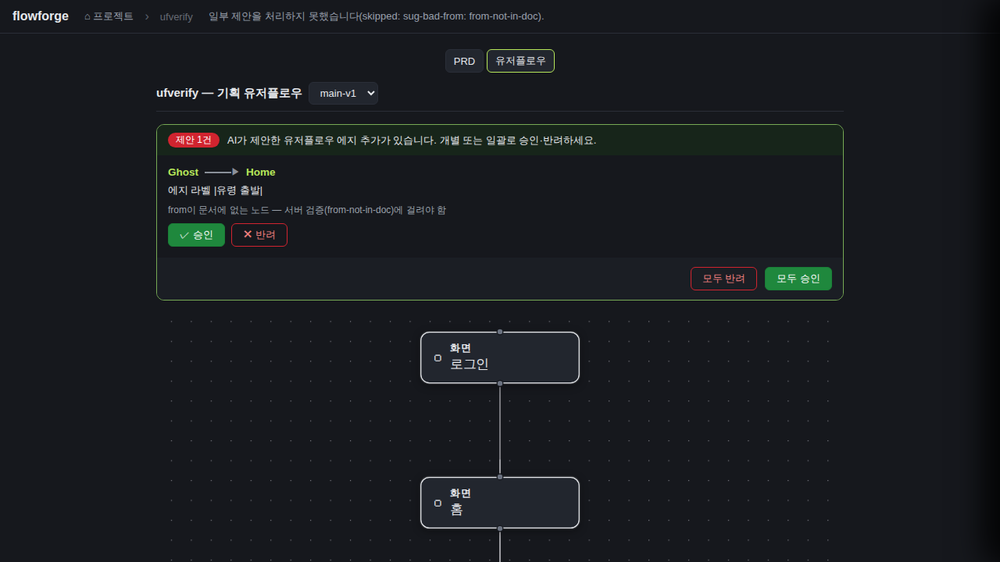
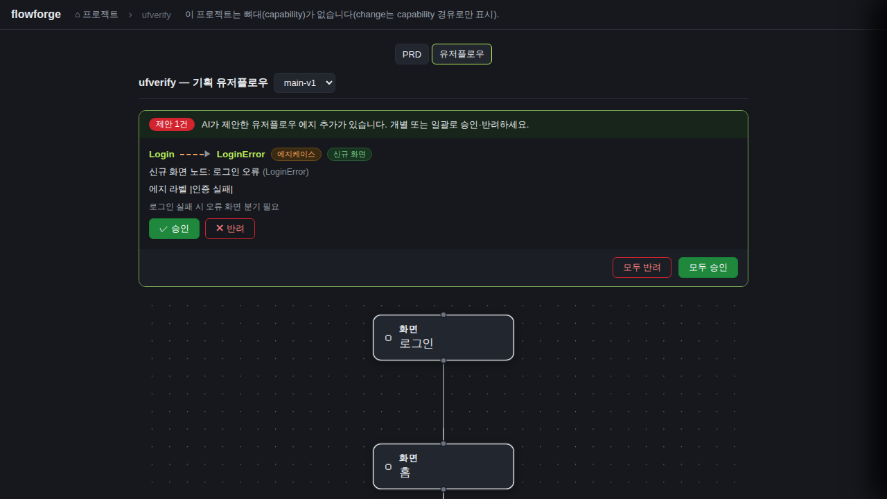
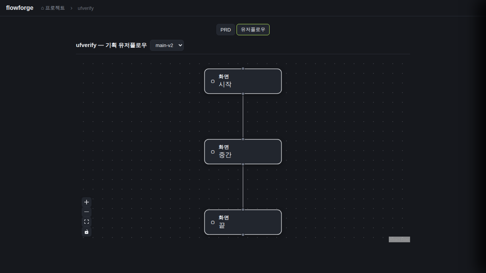
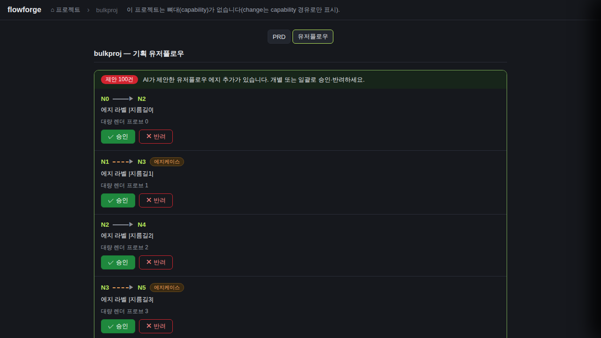
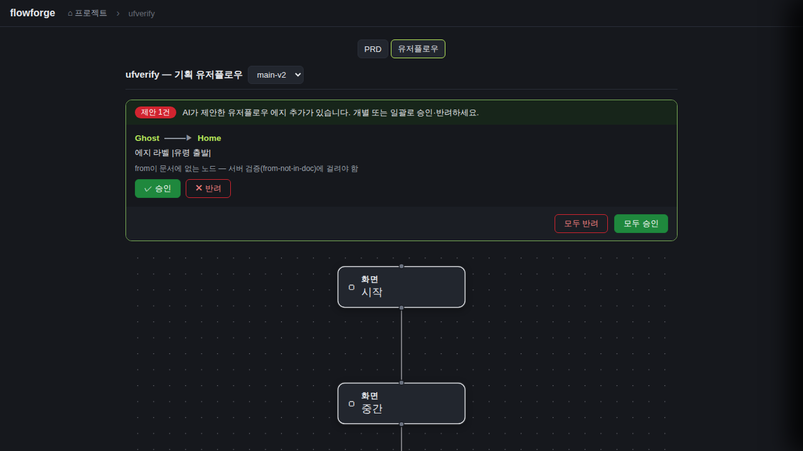

검증일: 2026-07-05T18:58:59+09:00 · 환경: server=PASS(jest 283/283·tsc 0·mutation 프로브 red/green 실측) · web=FAIL(gstack 실픽셀 5 프로브 중 P3 동시성 FAIL) · android=SKIPPED(적용 불가) · ios=SKIPPED(macOS 필요) · run: run-20260705-1858
PASS 14 · FAIL 1 · 검증 안 함 0 · SKIPPED 0
| Requirement | Scenario | Layer | 검증 수단 | 탐지 근거(basis) | 결과 | 증거 |
|---|---|---|---|---|---|---|
| 에지 추가 제안 큐를 조회한다 (GET planning-user-flow-suggestions) | 큐 파일이 있으면 제안 목록을 반환한다 | server | jest 단위 '정상 큐를 파싱해 반환한다' + 라우트 통합 'GET — 큐 있으면 200 + 제안 목록' | server/package.json(jest) + src/lib/__tests__/userFlowDocs.test.ts·src/routes/__tests__/docsUserFlowApproval.test.ts | ✓ PASS | 본 verify에서 재실행(2026-07-05 18:5x KST): jest 전체 28 suites / 283 tests PASS, 진짜 exit=0(${PIPESTATUS[0]} 실측). 대상 2파일 41/41 PASS (userFlowDocs 28 + docsUserFlowApproval 13). |
| 에지 추가 제안 큐를 조회한다 (GET planning-user-flow-suggestions) | 큐 파일 부재는 빈 큐 200이다 | server | jest 단위 '큐 파일이 없으면 빈 큐를 반환한다(404 아님)' + 라우트 통합 'GET — 큐 파일 없으면 200 + 빈 큐(404 아님)' | server/package.json(jest) + 대상 테스트 2파일 | ✓ PASS | 재실행 41/41 PASS. web P3 프로브의 main-v2(큐 파일 없는 stem)에서도 GET이 200 빈 큐로 응답함을 브라우저 네트워크로 간접 재확인. |
| 에지 추가 제안 큐를 조회한다 (GET planning-user-flow-suggestions) | 깨진 큐·무효 제안은 걸러진다 | server | jest 단위 '깨진 JSON이면 빈 큐(throw 금지)'·'무효 제안은 걸러내고 유효만 남긴다(필드 누락·to+newNode 동시·둘 다 없음·어휘 밖)'·'stem 안전 토큰 아니면 빈 큐(경로 이탈 차단)' | server/package.json(jest) + 대상 테스트 2파일 | ✓ PASS | 재실행 41/41 PASS (2026-07-05 18:5x KST). |
| 승인분만 검증을 거쳐 Mermaid에 append 반영한다 (POST apply) | 기존 노드 간 happy 에지 승인이 문서에 반영된다 | server | jest '기존 노드 대상 happy 에지 승인 → `From -->|라벨| To` append + 재파싱 kind:happy'·'append는 첫 mermaid 블록 닫는 펜스 직전' + 라우트 통합 '승인 시 에지 append + 재조회 그래프 반영' + web W1에서 실제 md append 실측 | jest 대상 2파일 + gstack W1 서버측 효과 재조회 | ✓ PASS | jest 41/41 PASS. web W1에서도 main-v1.md 첫 mermaid 펜스 직전에 ' Detail -->|뒤로가기| Home' 라인 append를 파일 재조회로 실측. |
| 승인분만 검증을 거쳐 Mermaid에 append 반영한다 (POST apply) | 신규 화면 노드로의 에지케이스 에지 승인이 반영된다 | server | jest 'newNode 대상 edgecase 승인 → `From -.->|라벨| NewId[\"라벨\"]` append + 재파싱 새 노드' + 라우트 통합(happy+edgecase 신규 노드 동시) | jest 대상 2파일 | ✓ PASS | 재실행 41/41 PASS. web W1 fixture의 edgecase 제안(Login→신규 LoginError)도 카드에 점선·에지케이스·신규 화면 뱃지로 렌더됨(스크린샷 web-w1-before.png). |
| 승인분만 검증을 거쳐 Mermaid에 append 반영한다 (POST apply) | 반려는 문서를 건드리지 않고 큐에서만 제거된다 | server | jest '반려하면 문서는 바이트 단위로 불변, 큐에서만 제거' + 라우트 통합 '반려 시 문서 바이트 불변 + 큐에서 제거' | jest 대상 2파일 | ✓ PASS | 재실행 41/41 PASS. 바이트 단위 동일성 단언(toBe 문자열 비교). |
| 승인분만 검증을 거쳐 Mermaid에 append 반영한다 (POST apply) | 검증 위반 제안은 skipped로 표면화된다 | server | jest from부재·newNode id 충돌(대소문자 무시)·라벨 금지문자(D-4) 각각 skipped+원본 불변+유효분 정상 반영 + review 치명1 fix 커버 '파싱 오염 라벨은 그 제안만 skipped, 유효 형제는 정상 반영(배치 독살 금지)'·'백틱 펜스 newNode 라벨도 개별 skipped'·'roundtrip 깨는 제안은 개별 skipped(배치 writeFailed 아님)' + web P1 실픽셀 | jest 대상 2파일 + gstack P1 | ✓ PASS |  |
| 승인분만 검증을 거쳐 Mermaid에 append 반영한다 (POST apply) | 이미 존재하는 에지 제안은 멱등 skipped다 | server | jest '동일 from·to·kind 에지가 이미 있으면 skipped(라벨 달라도) — 재적용 멱등' | jest 대상 2파일 | ✓ PASS | 재실행 41/41 PASS (2026-07-05 18:5x KST). |
| self-roundtrip 방어가 쓰기를 게이트한다 | 방어 위반 시 422와 원본 보존 | server | jest 'roundtrip 불변식 깨면 write하지 않고 writeFailed(문서·큐 불변)'·'기존 엣지 라인 소실 afterLines→false'·'<stem>.md 부재 시 writeFailed(원본 보호·큐 불변)'·'불안전 stem이면 writeFailed + unsafe-stem 사유' + 라우트 통합 writeFailed→422 변환 | jest 대상 2파일 | ✓ PASS | 재실행 41/41 PASS (2026-07-05 18:5x KST). |
| self-roundtrip 방어가 쓰기를 게이트한다 | 방어 무력화 프로브 — 방어가 항상 통과하도록 조작되면 테스트가 실패한다 | server | 실측 mutation 프로브: userFlowInvariantHolds 본문을 `return true`로 강제 치환 후 jest 실행 → red 확인 → git checkout 복원 → green 재확인 | 본 verify에서 직접 mutation 수행(테스트 존재 확인 아님) | ✓ PASS | 무력화 상태: 대상 2파일 6 failed / 35 passed (RED, exit 1 — '기대 에지가 있는데 아무것도 추가 안 된 afterLines는 false' 등 방어 커버 테스트가 red). git checkout 복원 후 41/41 PASS (GREEN, exit 0). 작업트리 clean 확인. 2026-07-05 18:5x KST. |
| 유저플로우 탭에 승인 패널을 표시한다 (web UI) | 큐가 있으면 패널이 뜨고 승인 후 그래프가 갱신된다 | web | gstack 실픽셀: fixture 큐 2건(happy Detail→Home + edgecase Login→신규 LoginError) → 패널 '제안 2건' 카드 렌더 확인 → happy 카드 [승인] 클릭 → networkidle 후 '제안 1건'·그래프 에지 2→3(라벨 '뒤로가기' 등장) + POST apply 200 후 GET 재조회 네트워크 로그 + md append 파일 재조회 | web/package.json(vite+react)+web/dist(index.html)+gstack READY. 정적(step 4a): UserFlowApprovalPanel.tsx:40·api.ts:311/326·App.tsx:44-45/373/485/592-628/848-855 배선 확인 | ✓ PASS |  |
| 유저플로우 탭에 승인 패널을 표시한다 (web UI) | 빈 큐면 패널이 렌더되지 않는다 | web | gstack 실픽셀: 버전 셀렉트로 main-v2(큐 파일 없음) 전환 → [data-testid=uflow-approval] === null, 그래프 노드 3·에지 2 정상 렌더, 버전 셀렉트 등 기존 동작 유지 | 동일(gstack READY + 정적 배선 확인) | ✓ PASS |  |
| 유저플로우 탭에 승인 패널을 표시한다 (web UI) | [추가 엣지 프로브 P1 — 에러경로] apply skipped가 UI에 표면화된다 | web | gstack: 유효 1건 + 서버 검증 위반 1건(from 부재) 큐에서 [모두 승인] → skipped 사유 status 바 표면화 + 유효분만 반영 + skipped 제안 큐 잔존 | gstack READY + App.tsx applyUserFlow skipped 메시지 경로 | ✓ PASS | |
| 유저플로우 탭에 승인 패널을 표시한다 (web UI) | [추가 엣지 프로브 P2 — 대량] 제안 100건 큐가 렌더된다 | web | gstack: 유효 제안 100건 큐(노드 101개 문서) → 배너 '제안 100건', 카드 정확히 100개, 승인 버튼 101개, 그래프 노드 101개 동시 렌더 | gstack READY | ✓ PASS |  |
| 유저플로우 탭에 승인 패널을 표시한다 (web UI) | [추가 엣지 프로브 P3 — 동시성] 버전 빠른 전환 시 stem-큐 상태 일관성 | web | gstack: 버전 셀렉트 v1↔v2 연속 전환(프로그래매틱 7회 디스패치, 대기 없음) 후 최종 상태 일관성 단언 | gstack READY. 코드 확인: App.tsx switchPlanningFlow(~357-377)에 dashReqToken race 가드 부재(openProject·applyUserFlow에는 있음) | ✗ FAIL |  |
| Requirement | null | 빈값 | 잘못된타입 | 경계값 | 에러경로 | 동시성 | 대량 | 특수문자 | 판정 |
|---|---|---|---|---|---|---|---|---|---|
| 에지 추가 제안 큐를 조회한다 (GET planning-user-flow-suggestions) | ✓ | ✓ | ✓ | ✓ | ✓ | N/A | ✓ | ✓ | ✓ 충분 |
| 승인분만 검증을 거쳐 Mermaid에 append 반영한다 (POST apply) | ✓ | ✓ | ✓ | ✓ | ✓ | N/A | ✓ | ✓ | ✓ 충분 |
| self-roundtrip 방어가 쓰기를 게이트한다 | N/A | ✓ | ✓ | ✓ | ✓ | N/A | ✓ | ✓ | ✓ 충분 |
| 유저플로우 탭에 승인 패널을 표시한다 (web UI) | N/A | ✓ | N/A | ✓ | ✓ | ✓ | ✓ | ✓ | ✓ 충분 |
✓=covered · N/A=해당없음(사유 hover) · ✗=missing. happy-path만이면 검증 불충분 → 최종 FAIL 차단.
| Layer | 상태 | ran | passed | failed | 근거/사유 |
|---|---|---|---|---|---|
| server | ✓ PASS | 41 | 41 | 0 | 전체 스위트 283/283 PASS(진짜 exit 0) + 대상 2파일 41/41 + tsc --noEmit 0(server·shared) + mutation 프로브 red(6)/green(41) 실측 + review 치명1(배치 독살) fix 테스트 3건 커버 확인 + 작업트리 clean |
| web | ✗ FAIL | 5 | 4 | 1 | 스펙 시나리오 W1·W2 PASS + 엣지 프로브 P1(skipped 표면화)·P2(100건 대량) PASS. P3 동시성 FAIL: switchPlanningFlow(App.tsx ~357-377) dashReqToken 가드 부재 → 빠른 버전 전환 시 크로스-stem 패널 잔존/최종 선택 소실(재현 2/2, 스크린샷). tsc 0·build 0 |
| android | – SKIPPED | 0 | 0 | 0 | 적용 불가: android 프로젝트 아님 |
| ios | – SKIPPED | 0 | 0 | 0 | macOS 필요 |
✗ FAIL 차단 (scenario FAIL 존재)
archiveGate.open = false (PASS일 때만 true). verify.json이 이 값을 archive 게이트에 전달.
{kind=link}
{kind=link}
{kind=link}
{kind=link}
{kind=link}